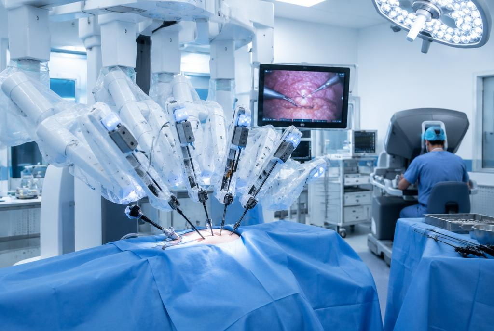
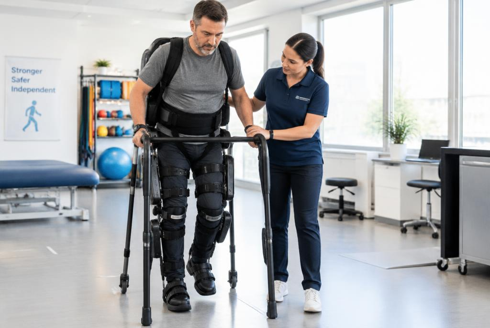

Cirugía robótica
El cirujano controla brazos robóticos desde una consola. Los instrumentos entran por cortes muy pequeños, lo que reduce el dolor y acelera la recuperación.
Los robots no reemplazan a médicos ni enfermeros: les dan más precisión, fuerza y alcance para cuidar mejor a los pacientes.

El cirujano controla brazos robóticos desde una consola. Los instrumentos entran por cortes muy pequeños, lo que reduce el dolor y acelera la recuperación.

Los exoesqueletos ayudan a personas con lesiones a volver a ponerse de pie y caminar, guiando cada movimiento con motores y sensores.
Manos y brazos robóticos leen las señales de los músculos para abrir y cerrar los dedos, permitiendo agarrar objetos de la vida diaria.
En los hospitales, algunos robots trasladan medicamentos, desinfectan salas y acompañan a pacientes, liberando tiempo del personal de salud.